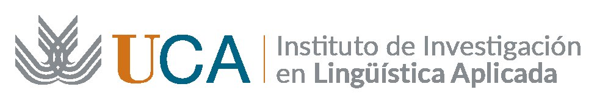

Aula conectada
20puestos de trabajo en red
- Equipos Intel i5 con gráficas NVIDIA y pantallas táctiles LG de 19″.
- Servidor local para recursos, bases de datos, docencia y control del aula.
IV Jornadas · Las Ciencias del Lenguaje al alcance de todos

Investigación, enseñanza y desarrollo en la intersección entre lingüística, informática y tecnologías de la comunicación actuales. Núcleo de innovación que aplica métodos computacionales al estudio y tratamiento del lenguaje humano, respondiendo a los desafíos de la era digital.
Pulsa el robot
Qué hacemos
Las tres primeras tarjetas llevan a demostraciones que puedes probar ahora mismo desde el móvil.
Análisis, compilación y limpieza automatizada de grandes volúmenes de datos lingüísticos y experimentales para aplicaciones prácticas.
Analiza un texto →Optimización de procesos, especialmente terminográficos, mediante técnicas híbridas y modelos de lenguaje.
Ejecuta un flujo →Investigación multidisciplinar con herramientas informáticas para el análisis avanzado de la lengua.
Habla con nuestro bot →Herramientas y recursos digitales para la investigación académica y la transferencia tecnológica.
Explora el equipamiento →Corpus y terminología
Un corpus es una colección de textos reales que se estudia con herramientas informáticas. Elige un ejemplo o pega el tuyo: los resultados cambian mientras escribes.
Pulsa una barra para ver esa palabra en contexto. Las palabras vacías son las más frecuentes en cualquier texto, pero dicen poco del tema: desactiva la casilla y verás que «de» y «la» lo dominan todo.
Cuanto más grande, más veces aparece la palabra (sin contar las palabras vacías). Pulsa cualquiera para ver sus concordancias.
Esto es una concordancia KWIC (keyword in context): cada aparición de la palabra con su contexto a izquierda y derecha. Así los lingüistas descubren cómo se usa una palabra de verdad. La franja de arriba es un gráfico de dispersión: cada raya marca dónde aparece la palabra, del principio al final del texto.
Buscamos combinaciones de palabras con contenido que se repiten (por ejemplo «parque eólico»). Esa repetición delata a los términos, las palabras propias de un ámbito especializado. Funciona mucho mejor con el texto especializado.
Automatización terminográfica
El ordenador ayuda a localizar candidatos a término y aporta datos para revisarlos: frecuencias, concordancias y contexto. La persona especialista interpreta y valida los resultados.
Entrada: texto copiado de una web
Quitar etiquetas HTML, referencias y espacios de sobra; normalizar mayúsculas.
Cortar el texto en unidades: palabras y signos.
Asignar a cada token su categoría gramatical y su lema (la forma de diccionario).
Buscar patrones típicos de los términos: sustantivo + adjetivo, sustantivo + de + sustantivo…
Chatbots
En el laboratorio desarrollamos chatbots como Botseriu, basado en AIML y alojado en Pandorabots. El chat de abajo no es Botseriu: es un ejemplo sencillo, hecho para esta página, de cómo funciona un bot de reglas.
Espacios y recursos
Herramientas para analizar, documentar y compartir datos lingüísticos.
Formación y salidas
No hay un único camino: el campo combina conocimientos de lengua con herramientas informáticas.
Lingüística, idiomas, gramática y análisis de textos o habla ayudan a plantear buenas preguntas y entender los datos.
Programación, estadística y herramientas para procesar corpus permiten convertir esas preguntas en análisis y aplicaciones.
Los proyectos se construyen en equipo: se prueban con datos reales y se revisa si los resultados son útiles y fiables.
Conecta el estudio lingüístico con métodos computacionales y el desarrollo de aplicaciones.
Puedes llegar desde distintos estudios